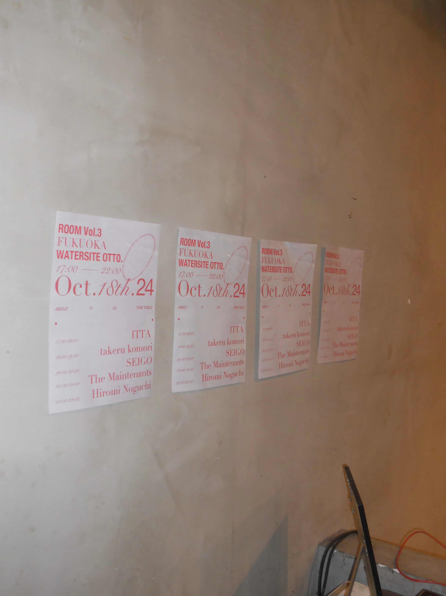
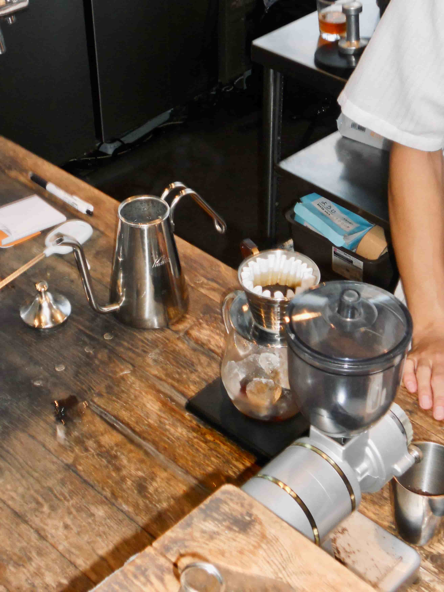

TOKYO / JP




nwim


Producer/Beatmaker based in Tokyo, Japan.
With a distinctive sensitivity for textures and emotional resonance,
nwim crafts understated yet deeply immersive beats that blur the line between lo-fi,
ambient,
and experimental hip-hop.
He has collaborated with baristas, rappers, and independent creators,
sampling everyday sounds—like coffee roasters or urban field recordings—to weave sonic
narratives.
In 2025, he re-released his track “so what” featuring Tokyo-based rapper urak, which gained
attention for its minimalism and refined sense of space.
Balancing raw imperfection and sonic depth, his work has quietly resonated with listeners
beyond
genre or trend.